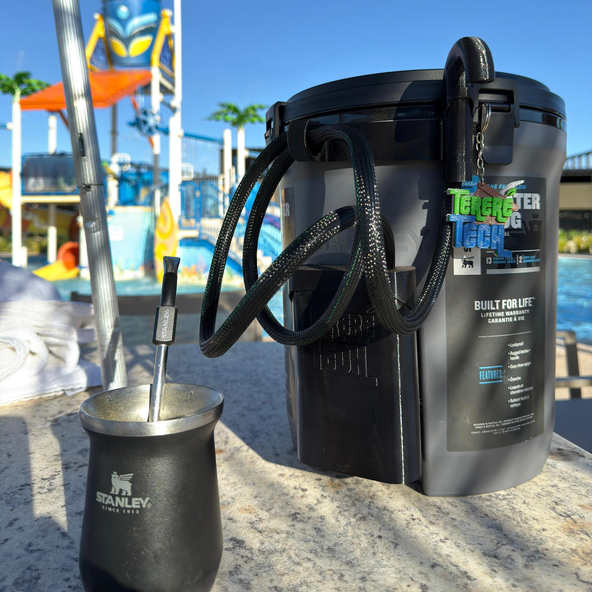

A Bomba que Revolucionou o Tereré!
Saboreie seu tereré com a praticidade e tecnologia que só a Tereré Tech oferece.

Saboreie seu tereré com a praticidade e tecnologia que só a Tereré Tech oferece.
Mantenha sua garrafa intacta e valorizada. Instalação fácil, rápida e segura.
Tem Bateria interna!
Aproveite seu tereré em tempo integral, sem se preocupar em
recarregar. Dias de uso garantidos!
Modernidade e praticidade para recarregar, com o mesmo cabo do seu celular, com cabo e fonte inclusos na caixa.
Encha seu copo em segundos, com o motor mais forte do mercado, sem esforço e com fluxo constante e vigoroso.
Tudo que você precisa para usar sua Tereré Tech está na caixa:
Fonte, Cabo Tipo-C, Suporte Veicular, Suporte lateral.
E pagando com Pix você ainda ganha um suporte para copo!
Uma bomba que combina perfeitamente com o estilo e a qualidade da sua garrafa Stanley ou a sua favorita, com os traços e linhas que se destacam em qualquer lugar.
Veja como é simples e rápido usar sua Bomba Tereré Tech!
"Comprei a minha e adorei! Não furo mais a Stanley e o tereré fica pronto em segundos, muito prático!"
- Alisson Vemdramini de Terra Boa/PR"A bateria dura muito e o carregamento Tipo-C é um diferencial. Tereré Tech é outro nível de qualidade!"
- Pedro Junior de Barra do Garças/MTÉ super simples, não precisa furar a garrafa e não precisa de ferramentas. Apenas remova a torneira e no lugar dela fixe a bomba. No caso da garrafa INOX, apenas retire o tubo da saida e conecte a mengueria no lugar. A fixação fica pro conta da dupla face INDUSTRIAL 3M de alta adesão que garante que seu sitemas não vai cair. ATENÇÃO: O modelo para STANLEY, INOX e o UNIVERSAL são diferentes. selecione o modelo correto antes de finalizar a compra.
SIM, nossa bomba é projetada para se adaptar à maioria das garrafas. Nós temos 3 modelos de sistema, um para garrafas STANLEY, outro para INOX de bombear e outro UNIVERSAL, que com ele acompanha um adaptador para instalar no lugar das torneiras das mais diversas marcas, como TERMOLAR, INVICTA, SOPRANO E ONIX.
A bateria tem uma autonomia de até 90 litros de
uso contínuo EM TODOS OS MODELOS, temos relatos de clientes que
com uso MODERADO durou até 3 MESES e com uso
INTENSO dura em torno de
15 DIAS. Trabalhamos com uma placa de controle de
consumo associado a celulas de lítio da melhor qualidade.
NOSSOS CLIENTES TEM SEMPRE O MELHOR.
NÃO precisa furar a garrafa, com a gente a garantia da sua garrafa está a salvo. O sistema se conecta com a garrafa pelo acesso da torneira e a fixação fica por conta da fita dupla face INDUSTRIAL 3M de alta adesão. No caso da INOX de bombear ela ultiliza o acesso do tubo de saída, basta retirar e conectar a mangueira. LEMBRE-SE DE INFORMAR O MODELO DA SUA GARRAFA.
Oferecemos 3 meses de garantia contra defeitos de fabricação. Caso
tenha qualquer problema nesse periodo, fazemos a troca ou conserto
sem custo adicional.
Nossa prioridade é sua satisfação!
Caso já tenha passado da garantia a bomba é totalmente reparável.
Basta nos enviar o produto e faremos o orçamento. Se não for
possível o conserto, você ganha até
50% de desconto na compra de uma nova do mesmo
modelo. Consulte nossos vendedores para saber todos os detalhes.
Nosso produto é de FABRICAÇÃO PROPRIA Utilizamos
as melhores maquinas de impressão 3D do mercado
associado com o polimero pet-g de alta qualidade garantem o melhor
sistema do mercado e a facilidade da limpeza. No motor utilizamos
o modelo de pistão em conjunto com duas valvulas que garantem o
desempenho, nosso sistema trabalha com sucção,
então mesmo que tenha alguma entrada de ar ou nas sacudidas do
veiculos não entra ar no sistema e não afeta seu funcionamento.
Aqui você tem o MELHOR do mercado!
Infelizmente NÃO suporta água quente, mas ja
estamos com um projeto em desenvolvimento, caso seja do seu
interesse deixe seu contato você estará incluso no primiero
momento do lançamento dessa versão.
Clique AQUI!!
Recomendamos a limpeza da mangueira e bico com pano humido. Evite
submeter as entradas de carregamento à água. O Sistema Tereré Tech
é resistente a Água, não pode ser sobmerso.
Passo a Passo para Limpar seu Sistema:
1. Encha a Garrafa: Coloque água até encher a
garrafa.
2. Adicione o Produto de Limpeza: Misture uma
colher de sopa de vinagre de álcool ou água sanitária na água.
3. Pressione o Gatilho: Segure pressionado o
gatilho até que a solução tenha percorrido todo o sistema.
4. Deixe a Água Sair: Após 20 minutos com a
solução reagindo no sistema, pressione novamente o gatilho até
consumir em torno de 1/4 do conteudo... Repita esse passo até que
a garrafa fique vazia.
5. Passe agua limpa: Encha novamente a garrafa
com água limpa e acione o sistema para que a água corra por todos
os componentes e finalize a limpeza do seu equipamento.
Transforme sua hidratação agora mesmo! Se restou alguma dúvida, clique aqui e fale conosco. Não espere mais para ter essa tecnologia em casa.
Compre Agora na Nossa Loja! Falar no WhatsApp!Envio rápido e seguro para todo o Brasil.